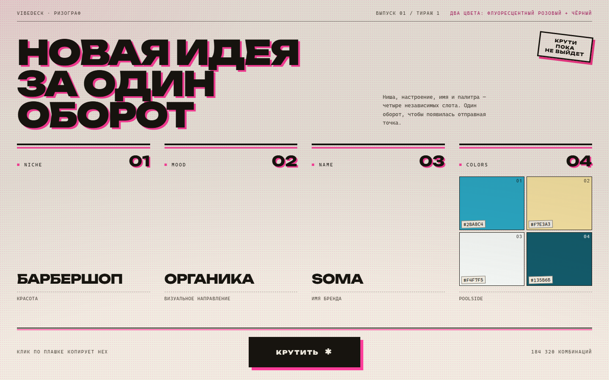
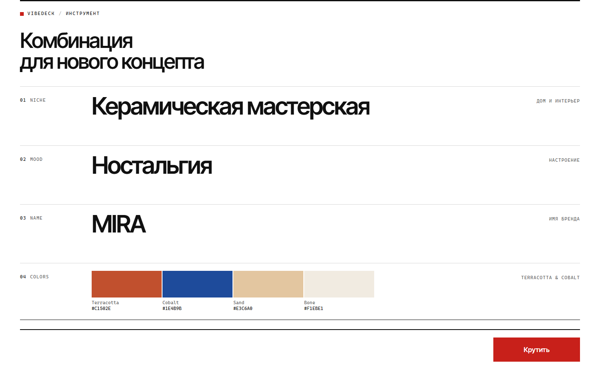
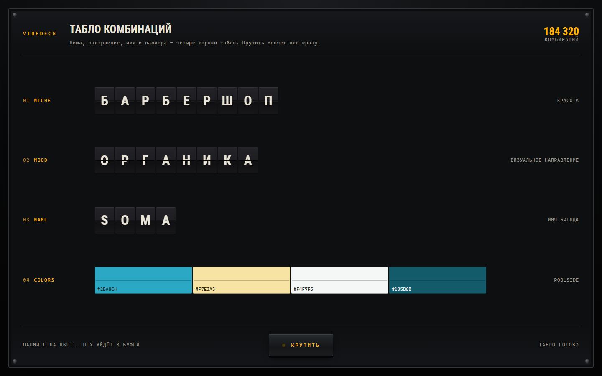
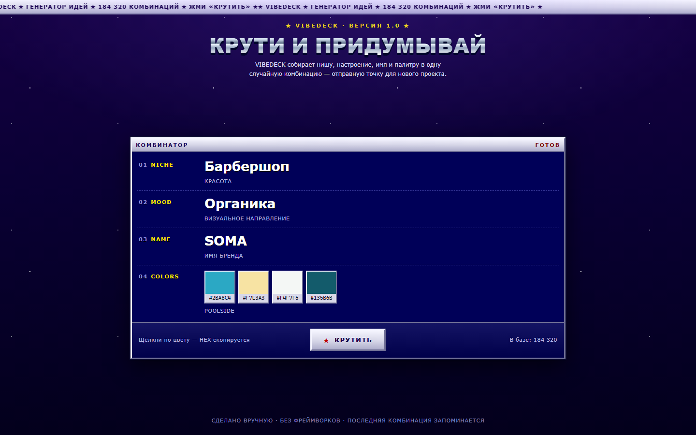
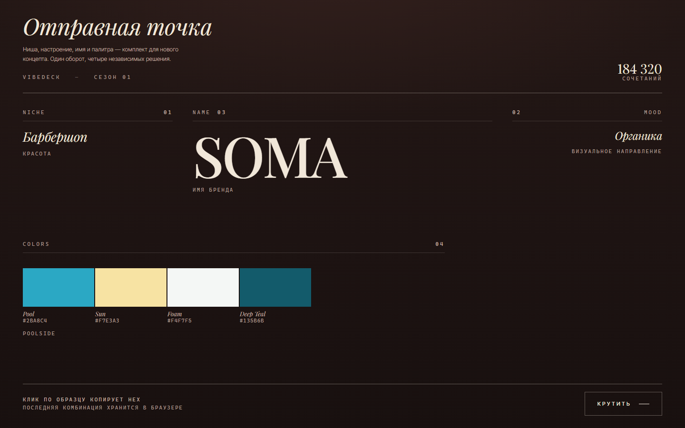

Пять направлений,
один продукт
Одна механика — четыре слота, один жест, копирование HEX, возврат последней комбинации — в пяти несовместимых визуальных мирах. Данные общие: data/vibedeck.json.
-
01

Ризограф
Двухцветная печать: флуоресцентный розовый поверх чёрного, новостная бумага, неприводка и барабаны как перепечатка.
-
02

Макет
Neue Grafik: белое поле, волосяные линейки, четыре строки-регистра и единственный красный сигнал внизу.
-
03

Табло
Аэропортовое табло: металлический корпус, янтарные подписи и механические лепестки, которые перебирают буквы по одной.
-
04

Личная страница
Домашняя страница 2000 года: звёздное небо, хромированный заголовок, выпуклые панели и бегущая строка.
-
05

Ателье
Модный лукбук: тёмный кабинет, огромное серифное имя в центре, палитра как образцы ткани и медленное проявление.